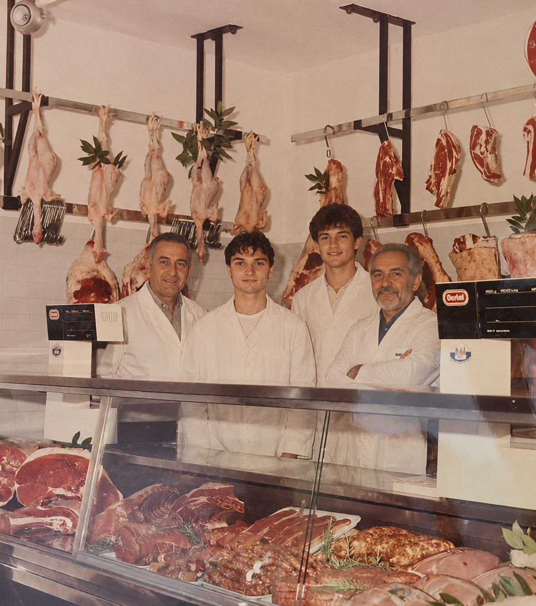
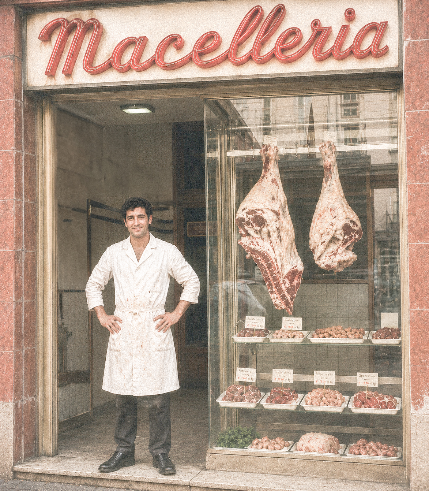
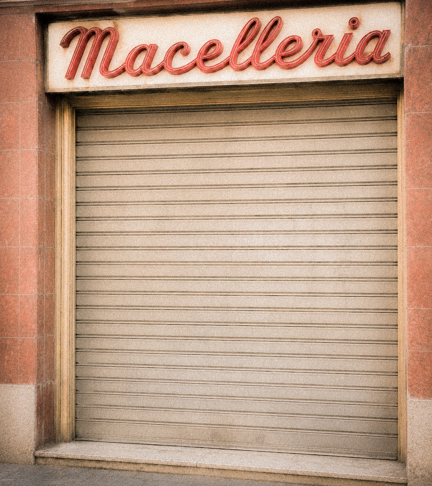

De veciariìe, è l’eredità di Ruggiero Somma, macellaio nato a Barletta. Il suo lavoro ereditato da diverse generazioni, era per lui qualcosa che andava raccontato, per far vedere cosa c’è dietro un semplice banco di vendita o una saracinesca alzata. Nasce e impara i segreti del mestiere nella macelleria di suo nonno a Barletta.
Durante gli anni ’60 Ruggiero decide di mandare avanti la sua attività a Bari. La bottega diventa casa, luogo di lavoro e punto d’incontro. Con il tempo inizia a fotografare colleghi, banchi, coltelli, insegne, saracinesche e piccoli gesti quotidiani, trasformando il mestiere in memoria.
Quello che doveva essere l’album orgoglioso di una categoria diventa, con la crisi della Mucca Pazza, il documento malinconico di un mondo che stava scomparendo. De veciariìe rimane oggi come archivio visivo di quelle macellerie pugliesi, delle loro persone e della loro cultura materiale.